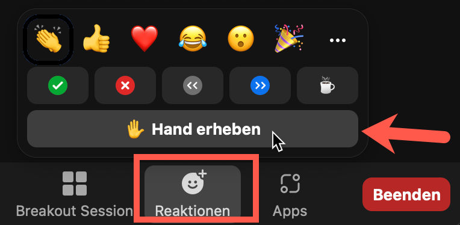

React Vertiefung
Nils Hartmann | @nilshartmann
Repository
Remote: https://github.com/nilshartmann/react18-state-workshop
Slides
Lokal: 2024-04-08-react-advanced.html
Remote: https://nilshartmann.github.io/react18-state-workshop/2024-04-08-react-advanced.html
Nils Hartmann
https://nilshartmann.net / @nilshartmann
Freiberuflicher Software-Entwickler, Berater und Trainer aus Hamburg

Grundsätzliches
Bitte schaltet Euer Video ein üôè
Jederzeit: Fragen und Diskussionen! Bringt euch gerne ein.
Motto: Es gibt keine dummen Fragen!
Bemerkbar machen per Audio, "Hand heben" oder Chat

Ich zeige viel direkt im Editor, aber ihr könnt die Slides als Referenz benutzen
Wir machen zwischendurch Übungen, in denen ihr selbst programmieren könnt
Hintergrund: Daten und State
- Serverseitige Daten und clientseitiger State
- Arten von State: lokal und global
- Überblick: üëâ Daten und State
Hintergrund: Globaler Zustand
- Man kann Zustand in lokalen Zustand und globalen Zustand einteilen
- Lokaler Zustand ist Zustand, der "mehr oder weniger" einer Komponente zur Verfügung steht
- Globaler Zustand hingegen ist für die ganze Anwendung oder große Teile davon zuständig
- Die Übgergänge sind fließend, es gibt keine fixe Definition
- Beispiele für globalen Zustand: angemeldeter Benutzer, Theme
React Context API
Kein Statemanagement, aber häufig zusammen erwähnt
"Dependency Injection"
Überblick: üëâ Anwendungshierachie mit State und Props (Miro)
Im Detail: Context API
Beispiel: 20_context/workspace
In Container.tsx Anzeige der Border einschalten (hideBorder = false)
CounterApp rendern!
In Container.tsx Anzeige der Renderings einschalten
(showRenderings = true)
(Material in
context-example/material/CounterContext.txt)
Context...
erlaubt das Durchreichen von Informationen ohne explizites angeben als Properties
- funktioniert nur innerhalb einer Hierarchie-Ebene
- es können beliebg viele (fachliche) Context definiert werden
- besteht aus
ProviderundConsumer - Doku
Context Factory
- erzeugt ein Objekt, mit zwei Komponenten
-
Provider, stellt Objekt mit Key-Value-Paaren zur Verfügung (der Context-"Value") -
Consumerwird in eigener Komponente verwendet, um auf einen Context zuzugreifen ("versteckt" durch useContext Hook) -
import react from "React"; const AuthContext = React.createContext(); // erzeugt: // AuthContext.Provider // AuthContext.Consumer (mit Hooks API überflüssig) export AuthContext;
useContext-Hook
Zugriff auf die Werte aus dem Context
In allen Komponenten unterhalb der Provider Komponente, kann mit
useContext auf den Kontext zugegriffen werden
import { AuthContext } from "auth-context";
function UserBadge() {
const { currentUser } = React.useContext(AuthContext);
return currentUser ? <h1>Welcome, {currentUser}<h1> : null;
}
Aufrufen einer Funktion aus dem Context
Ändert im Context den Zustand der Provider-Komponente
Alle Konsumer werden neu gerendert und können den neuen Wert verwenden
function UserBadge() {
const { currentUser, logout } = React.useContext(AuthContext);
return currentUser ?
<><h1>Welcome, {currentUser}<h1><button onClick={logut}>Logout</button></>
: null;
}
Testen
Was testen wir?
- UI-unabhängige Logik (zum Beispiel Backend Calls, Berechnungen etc.)
- Rendering (Ist die Liste der Blog Posts korrekt? Sieht das Markup aus, wie wir uns das vorstellen?) und Interaktionen (funktionieren die Event Handler, die Callback-Funktionen, der Programmfluß etc.?)
- Verhalten im Browser (z.B. korrekte, pixelgenaue Darstellung, Browser-spezifisches JavaScript, Arbeiten mit Browser-Technologie wie Titelzeile, Session Storage, Scrollbars etc)
Jest
"Delightful JavaScript Testing" ( https://jestjs.io/)
Vollständige Testlösung für React (und andere):
- Test Runner
- Specs/Assertions, Mocks
- Code Coverage
Vitest
Falls ihr mit Vite arbeitet, bietet sich Vitest an.
- Das ist deutlich moderner als Jest und arbeitet auch besser mit dem ECMAScript Modulsystem (ESM) und TypeScript zusammen
- Vitest hat eine sehr ähnliche API wie Jest und ein vergleichbares Feature-Set
- Es gibt auch einenMigrationspfad von Jest
Jest
Beispiel: Ein einfacher Testfall
// sum.js (or sum.ts)
export const sum = (a,b) => a+b;
// sum.test.js
import {sum} from '../sum.js';
test('sum of 2 and 2 is 4', () => {
expect(sum(2, 2)).toBe(4);
});
test('sum of 2 and 2 is not 3', () => {
expect(sum(2, 2)).not.toBe(3);
});
Jest
Testcases
test oder
it
test('it should work', () => {
expect(...).toBe(...);
});it('it should also work', () => {
expect(...).toBe(...);
});Jest
"Expectations" und "Matchers"
expect() liefert ein Expectation Objekt
zurück, das verschiede Matcher Funktionen bereitstellt:
expect(actual).toXyz(expected);
// for example:
expect("Hello Jest").toBe("Hello Jest"); // => ok
Beispiele für Matchers
// Compare identity
expect(actual).toBe(expected);
// Compare value:
expect(actual).toEqual(expected);
// true / false / null:
expect(actual).toBeTruthy();
expect(actual).toBeFalsy();
expect(actual).toBeNull();
// Length (Array oder String)
expect(actual).toHaveLength(123);
Jest
Mock Funktionen
-
jest.fn()erzeugt eine Mock-Funktion// Gibt undefined zurück, wenn die Mock-Funktion ausgeführt wird const aMockFn = jest.fn(); const x = aMockFn("hello", "world"); // => undefined expect(x).toBeUndefined(); -
Mit
toHaveBeenCalled-Matcher-Funktionen kann geprüft werden, ob der Mock aufgerufen wurde, wie häufig und mit welchen Parametern:expect(aMockFn).toHaveBeenCalled()); // Mock wurde aufgerufen (Parameter werden ignoriert) expect(aMockFn).toHaveBeenCalledWith("hello", "world")); // Mock wurde mit 'huhu' aufgerufen expect(aMockFn).toHaveBeenCalledTimes(1)); // Mock wurde genau einmal aufgerufen // Übergebene Paramter stehen über .mock.calls: expect(aMockFn.mock.calls[0][0]).toBe("hello"); expect(aMockFn.mock.calls[0][1]).toBe("world"); -
Implementierung der Mock-Funktion kann als Parameter übergeben:
const aMockFn = jest.fn( param => `Hello, ${param}` ); console.log(aMockFn('World')); // => Hello, World
Jest
Achtung:
Je nach Jest-Version und Setup müsst ihr das
jest-Objekt importieren
import { jest } from "@jest/globals";
(Die test-Funktion funktioniert in der Regel ohne
import...)
Testen von React Komponenten und Hooks
react-testing-library
"Simple and complete React DOM testing utilities that encourage good testing practices."
https://github.com/testing-library/react-testing-library)
Philosophie: Tests werden aus User-Perspektive geschrieben. Das bedeutet, um die zu testenden Elemente zu finden, suchst Du nach Eigenschaften, nach denen auch ein User suchen würde (z.B. Labels, Placeholder etc.)
react-testing-library
Example
Demo: 20_context/workspace/src/__tests__/PostEditor.test.tsx
import { render, screen } from "@testing-library/react";
import _userEvent from "@testing-library/user-event";
import { jest } from "@jest/globals";
it("invokes callback on button click", () => {
const user = _userEvent.setup();
const onAddPostFn = jest.fn();
// Render
render(<PostList onAddPost={onAddPostFn} posts={mockPosts} />);
// search the button
const buttonElement = screen.getByRole("button", { name: "Add Post" });
// "click" the button
await user.click(buttonElement);
// make sure it has been invoked
expect(onAddPostFn).toHaveBeenCalled();
});
React Testing Library im Detail
Die render-Funktion
- Die render-Function aus der react-testing-library wird im Test verwendet, um eine React Komponente (ohne Browser) zu rendern
- Genauso wie in der Anwendungen können Properties angegeben werden
-
import { render } from "@testing-library/react"; // Render a single component render(<PostList onAddPost={onAddPostFn} posts={mockPosts} />); - Dran denken, ggf. Contexte ebenfalls zu erzeugen, falls diese benötigt werden (eigener Context, Router, MaterialUI, etc)!
-
// Render with surrounding Redux Provider (or Router, your own Context etc.) render( <NotificationContextProvider> <PostEditor onSavePost={onSavePostFn} /> </NotificationContextProvider> );
query Funktionen
Um die gerenderten HTML-Elemente aus deiner Komponente zu √ºberpr√ºfen und mit ihnen zu interagieren, musst Du sie ersteinmal finden ü§ì
Auf dem globalen screen Objekt der Testing-Lib sind verschiedene Funktionen definiert, mit denen Du nach Elementen suchen kannst
Die query-Funktionen haben unterschiedliche Suffixe, die beschreiben, nach welchem Kriterium Du suchst (nach Label, nach aria-role, ...)
Die Funktionen haben außerdem jeweils einen Präfix (getBy, queryBy etc) der beschreibt, die Art des Rückgabewerts der jeweilgen Funktion (z.B. ob sie einen Error wirft oder null zurückgibt, wenn das angefragte Element nicht gefunden wurde)
Mehr zu den query-Funktionen: React Testing Library Cheatsheet
// BEISPIELE:
import { screen } from "@testing-library/react";
// suche nach einem Button (Annahme: es gibt GENAU EINEN, ansonsten schlägt der Test fehl)
const buttonElement = screen.getByRole("button", { name: "Add Post" });
// suche nach einem Button (gibt null oder EINEN Button, wirft ansonst einen Fehler)
const buttonElement = screen.queryByRole("button", { name: "Add Post" });
// das verwendet man eigentlich nur, um zu testen, dass ein Element NICHT vorhanden ist:
expect(screen.queryByRole("button", { name: "Create Post" })).not.toBeInTheDocument();
// suche nach einem Button (gibt alle gefunden zurück oder ein leeres Array)
const buttonElement = screen.queryAllByRole("button", { name: "Add Post" });
Überprüfen von Elementen
Wenn Du dein gesuchtes Elemente gefunden hast, kannst Du es überprüfen, ob es deinen Erwartungen entspricht (korrekte Attribute gesetzt etc.)
Die Bibliothek jest-dom fügt dazu DOM-spezifiche Matcher für Jest hinzu.
import { screen } from "@testing-library/react";
expect(screen.getByRole("button", { name: "Add Post" })).toBeInTheDocument();
// stellt sicher, dass das Element im DOM vorhanden ist (getBy-Query würde hier vielleicht mehr Sinn machen)
expect(buttonElement).toBeInTheDocument();
// sicherstellen, dass ein Eingabefeld einen erwarteten Wert hat
expect(titleInput).toHaveValue("Moin moin");
// sicherstellen, dass ein Button disabled ist
expect(okButton).toBeDisabled();
Alle Matcher sind auf der oben verlinkten GitHub Seite dokumentiert
Interaktionen
Du kannst mit den Elementen interagieren, in dem Du ihnen Events sendest, genau wie es ein Browser tun würde
Es gibt eine weitere Bibliothek, user-event, die dir dabei hilft, die Events zu erzeugen.
import userEvent from "@testing-library/user-event";
// Simuliert die Eingabe in ein Textfeld
userEvent.type(titleInput, "New Title");
// Simuliert den Klick auf einen Button
userEvent.click(clearButton);
Achtung! In neueren Versionen (ab v14) der Bibliothek muss man erst setup-Aufrufen.
Außerdem sind die Funktionen nun asynchron, so dass Du mit
await auf deren Beendigung warten musst!
Das ist ganz wichtig!
import _userEvent from "@testing-library/user-event";
test("...", async () => {
const userEvent = _userEvent.setup();
// Simuliert die Eingabe in ein Textfeld
await userEvent.type(titleInput, "New Title");
// Simuliert den Klick auf einen Button
await userEvent.click(clearButton);
})
Alle Events sind auf der GitHub Seite beschrieben (Link oben)
Exkurs: Error Boundary selbstgebaut
getDerivedStateFromError und componentDidCatch werden von React im Fehlerfall aufgerufen
class ErrorHandler extends React.Component {
constructor(props) {
super(props);
this.state = { error: null };
}
static getDerivedStateFromError(error) {
return { error: error.toString() };
}
componentDidCatch(error, info) {
console.error("uups... we caught an error", error, info);
}
render() {
if (this.state.error) {
return (
<div>
<h1>An error occured!</h1>
<pre>{this.state.error}</pre>
<button onClick={() => this.setState({ error: null })}>Try again</button>
</div>
);
}
return this.props.children;
}
}
Exkurs: Error Boundary selbstgebaut
Lifecycle
class ErrorHandler extends React.Component {
constructor(props) {
super(props);
this.state = { error: null };
}
static getDerivedStateFromError(error) {
return { error: error.toString() };
}
componentDidCatch(error, info) {
console.error("uups... we caught an error", error, info);
}
render() {
if (this.state.error) {
return (
<div>
<h1>An error occured!</h1>
<pre>{this.state.error}</pre>
<button onClick={() => this.setState({ error: null })}>Try again</button>
</div>
);
}
return this.props.children;
}
}
- Komponente wird instantiiert, Konstruktor aufgerufen, State vorbelegt (error = null)
-
Komponente wird gerendert. Da
this.state.errornicht gesetzt ist, werden die Children gerendert - Fehler tritt in Unterkomponente beim Rendern auf
-
componentDidCatchwird aufgerufen (Fehler kann z.B. protokolliert werden) -
getDerivedStateFromErrorwird aufgerufen und liefert einen neuen Teil-State zurück.
(Andere Teile des States bleiben unverändert) -
Komponente wird erneut gerendert. Da
this.state.errorjetzt gesetzt ist, wird die Fehlermeldung angezeigt, inklusive des Buttons -
Nach dem Klick auf den Button, wird
this.state.errorwieder auf null gesetzt -
Komponente wird neu gerendert (durch
setState). Dathis.state.errorwieder null ist, werden die Children erneut gerendert
Object Spread Operator
Mit dem Spread Operator können alle Felder eines Objektes an eine andere Stelle kopiert werden
const person = { firstname: "Susi", age: 32 }
// Kopie erzeugen (herkömmlich)
const copy = { firstname: person.firstname, age: person.age }
// copy: { firstname: "Susi", age: 32}
// Kopie erzeugen (Spread operator)
const copy = { ...person };
// copy: { firstname: "Susi", age: 32}
copy.age = 33;
person.age; // 32
const person = { firstname: "Susi", age: 32 }
const employee = { ...person, salary: 695000 }
// employee: { firstname: "Susi", age: 32, salary: 695000 }
Achtung! Object-Spread-Operator kopiert nur "flach"
Beispiel mit Verschachtelung:
const oldPerson = {
name: "Klaus",
address: {
city: "Berlin", country: "Germany"
}
}
Was müssen wir tun, wenn Klaus von Berlin nach Hamburg zieht?
const newPerson = {
...oldPerson, // altes Objekt hier "einfügen"
// address muss nun auch kopiert werden:
address: {
...oldPerson.address,
city: "Hamburg"
}
}
Arbeiten mit immutable Arrays (ES6)
Zum Hinzufügen von Einträgen zu einem Array immer concat oder Spread-Operator benutzen
push verändert das bestehende Array, deswegen nicht verwenden!
const myArray = [ "a", "b" ];
const extendedArray = myArray.concat( "c", "d" );
// Spread-Operator bei Arrays
const oldArray = [ "b", "c" ];
// Anfügen eines Elementes
const newArray = [
"a", // vorne anfügen
...oldArray, // hier altes Array reinkopieren
"c" // hinten anfügen
]
Arbeiten mit immutable Arrays (ES6)
Array.map bildet alle Einträge aus einem Array auf ein
neues Array ab
const persons = [
{ lastname: "Mueller", firstname: "Klaus", age: 32 },
{ lastname: "Meier", firstname: "Susi", age: 33 }
]
const olderPersons = persons.map( p => {
return { ...p, age: p.age + 1 }
})
Arbeiten mit immutable Arrays (ES6)
Einträge aus Arrays entfernen
const newArray = oldArray.filter(oldEntry => oldEntry.id === idToBeRemoved);
// newArray ist eine Kopie ohne die rausgefilterten Eintraege
Weitere Methoden
Auch die Methode slice verändert das Array nicht, sondern liefert eine Kopie zurück.
Es gibt eine Reihe neuer Methoden am Array, die ebenfalls immutable sind. (Browser-Support prüfen!)
Zum Beispiel: toReversed, toSorted und toSpliced
Arbeiten mit immutable Arrays (ES6)
Verändern von Objekten in Arrays
// Verändern von Arrays:
function changeName(userId, newName) {
const newArray = oldArray.map(oldEntry => {
if (oldEntry.id === userId) { // dieses Element soll verändert werden
return { ...oldEntry, name: newName }
}
return oldEntry; // unverändert
});
// newArray ist eine Kopie, mit ggf. veränderten Einträgen
return newArray;
}
Welche Schwäche hat die oben gezeigte
changeName Funktion?
Immer: produce-Funktion
Die produce-Funktion bekommt ein Objekt übergeben, sowie eine zweite Funktion, die von immer mit einem Draft aufgerufen wird.
Dieses Draft kann verändert werden. Ihr könnt dort alle JavaScript-Funktionen verwenden
Der Rückgabe-Typ der produce-Funktion ist dann eine Kopie des alten Objektes mit den Änderungen, die auf dem Draft vorgenommen wurden.
import produce from "immer";
function changeName(userId, newName) {
const newArray = produce(oldArray, draft => {
const oldPerson = draft.find(p => p.id === userId);
if (oldPerson) {
oldPerson.name = newName;
}
});
// newArray ist eine Kopie!
return newArray;
}
Achtet bitte darauf, dass ihr die Änderungen am Draft vornehmt und nicht versehentlich am Original-Objekt!
Beispiele: Immer
function handleLastNameChange(newLastName: string) {
const newUser = produce(user, draft => {
// draft kann verändert werden, als ob es ein mutable Objekt sei
draft.lastName = newLastName;
})
);
setUser(newUser);
}
function handleContactTypeChange(contactId: string, newType: string) {
setUser(
produce(user, draft => {
const ix = draft.contacts.findIndex(contact => contact.id === contactId);
draft.contacts[ix].type = newType;
})
);
}
Geschafft! üòä
Vielen Dank für Eure Teilnahme!
Viel Spaß und Erfolg mit React!
Wenn ihr noch Fragen habt, könnt ihr mich erreichen:
Mail: nils@nilshartmann.net
Twitter: @nilshartmann